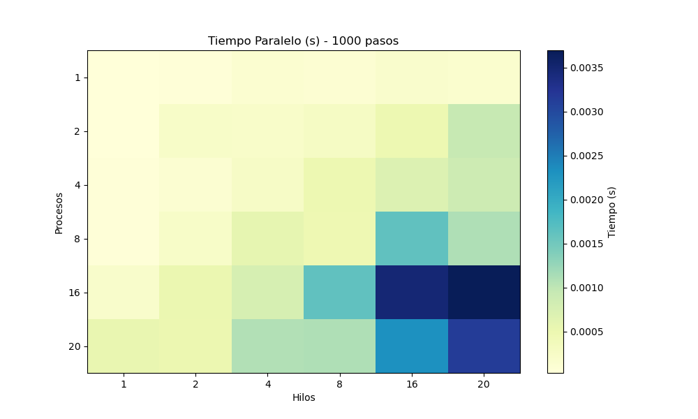
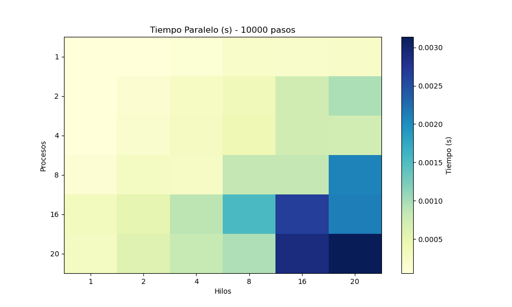
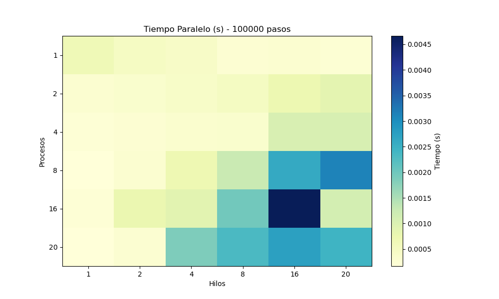
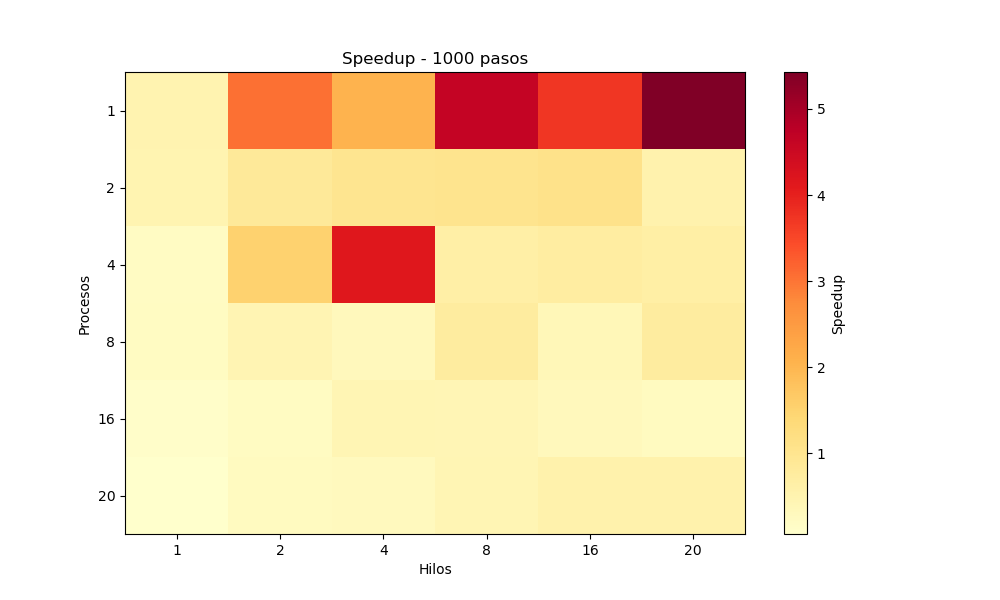
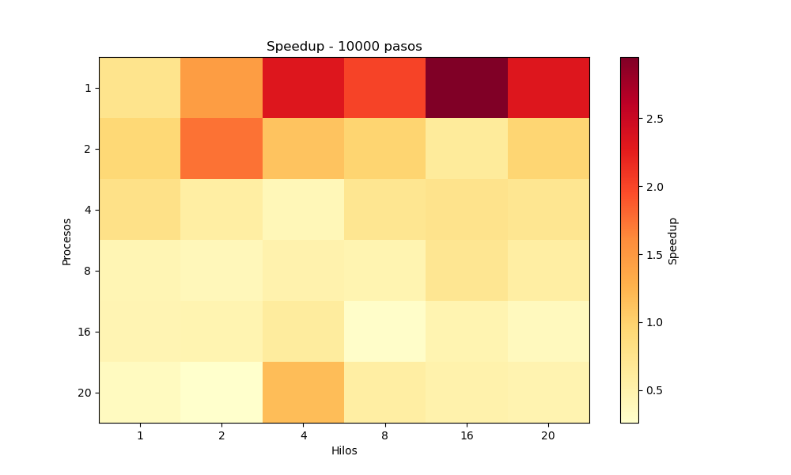
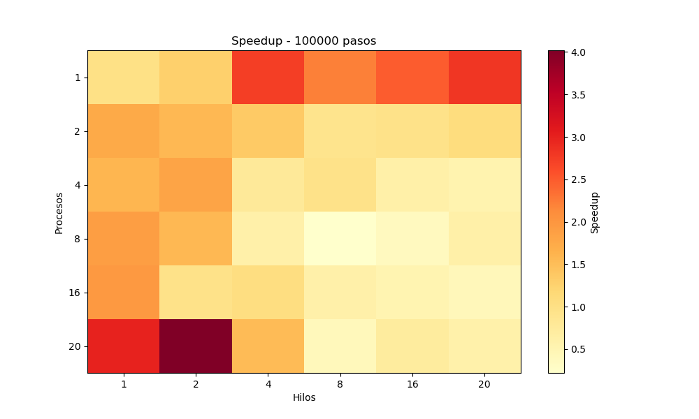

Visualización de Resultados - Monte Carlo con MPI + OpenMP
1. Heatmap de Tiempo Paralelo por Procesos y Hilos

Tiempo de ejecución paralela (en segundos) por número de procesos y hilos, para 1000 pasos.

Tiempo de ejecución paralela (en segundos) por número de procesos y hilos, para 10000 pasos.

Tiempo de ejecución paralela (en segundos) por número de procesos y hilos, para 100000 pasos.
2. Heatmap de Speedup por Procesos y Hilos

Speedup obtenido por número de procesos y hilos, para 1000 pasos.

Speedup obtenido por número de procesos y hilos, para 10000 pasos.

Speedup obtenido por número de procesos y hilos, para 100000 pasos.
3. Error Absoluto en π vs Pasos

Diferencia entre el valor estimado de π y su valor real, analizada en función del número de pasos y total de hilos.